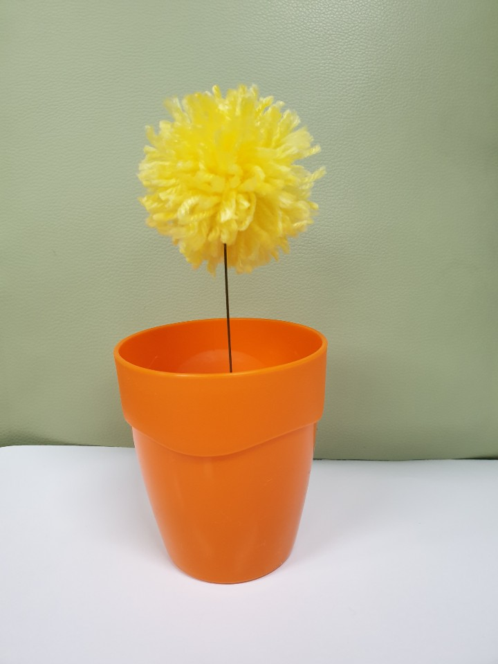

아기자기한 폼폼 화분 키트
폼폼키트 사용후기
구성물품
구성물품은 2가지 색상의 털실, 화분, 스티로폼공(플로랄폼이 안와서 대체합니다..), 철사, 가위, 실을 감을 도구, 순간접착제, 설명서 이렇게 있어요!
만들기 시작!

일단 설명서대로 폼폼을 만들기 위해서 박스에 실을 감았어요.
이만큼 뚱뚱하게 감고
가운데를 잘라놓은 실로 묶어줍니다.

박스를 쏙 뺀 뒤, 고리지어진 실들을 잘라줍니다.
가위로 사각사각 다듬어주면 폼폼이 만들어져요~
철사에 순간 접착제를 살짝 묻혀서 만들어 놓은 폼폼을 붙이면 귀여운 폼폼꽃 완성~!!
화분에 스티로폼공을 이렇게 담고, 만든 꽃을 꽃으면 됩니다. 공이 화분에 꽉찰만큼 크지 않아서 좀 구르길래 저는 사이사이에 휴지를 좀 넣었어요ㅎㅎ
짠~ 너무 귀엽지 않나요? 꼭 커다란 민들레꽃 같아요~ 하지만 저는 꽃이 가득 있었으면 좋겠어서 꽃을 더 만들었어요
알록달록한 폼폼은
이렇게 다른색 실 두개를 한꺼번에 감으면 된답니다
완성샷입니다~ 꽃이 한가득 있는게 너무너무 예뻐요><
+)추가 사담
마지막 꽃을 꽂으려는데, 스티로폼이 보이는게 신경쓰여서
이렇게 폼폼을 만들면서 생긴 자잘한 조각들을 화분안에 넣어줬어요~
감쪽같죠?ㅎㅎ 물론 꽃을 다 꽂으니 막상 보이지 않아서 아쉬웠지만ㅠㅠ.. 널널하거나, 작게 만드시는 분들은 스티로폼이 보이는게 싫으시면 이런 방법을 쓰시는것도 좋은거같아요!
총평
- 간단하게 예쁜 꽃을 만들 수 있어서 좋아요. 사이즈도 원하는대로 조절할 수 있고요.
- 본드를 사용하면서 손에 묻기도 하고, 가위도 사용하니 너무 어린아이들과는 함께 못만들 것 같네요..ㅜㅠ